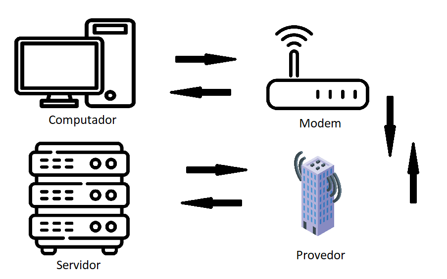
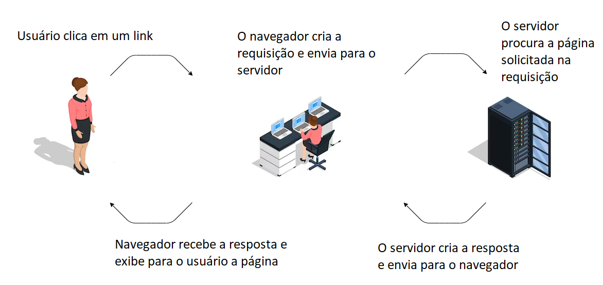
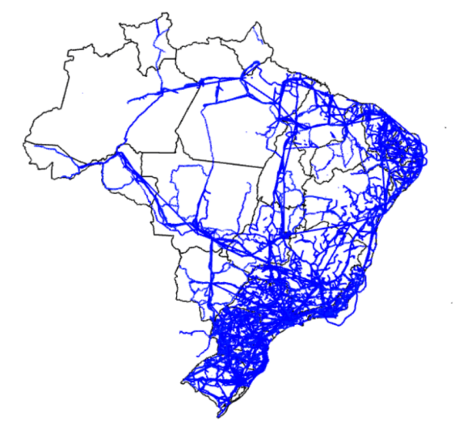
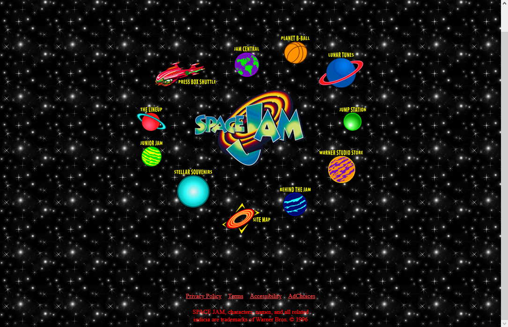

Como sugestão, configure a opção de leitura de caracteres e de pontuação de seu leitor de tela para o grau máximo de leitura, a fim de que os códigos disponibilizados neste material sejam lidos corretamente. No caso do NVDA (NonVisual Desktop Access), para localizar a opção Grau de pontuação/símbolos, acesse Preferências – Configurações – Fala. Altere o padrão Pouco para Tudo. Dessa forma, o leitor passará a ler os segmentos de código em sua totalidade.
A Internet tem o objetivo de possibilitar a troca de informações. Ela é uma estrutura física composta de muitos cabos que conectam diversos dispositivos. Esses cabos estão distribuídos por todo o planeta, formando uma grande teia que liga todas as cidades, os países e os continentes.
A Internet é um grande trabalho coletivo de diferentes equipamentos (modens, roteadores etc.) que se comunicam por meio de cabos de fibra óptica que passam no meio dos oceanos e por meio de ondas de rádio. Perceba que a Internet é descentralizada, não é um único computador superpotente que garante o seu funcionamento.
Você já parou para pensar o que acontece quando dois computadores são conectados? E um computador e um celular? Esses dispositivos, quando conectados, criam uma rede local que permite a comunicação entre eles. Isso é muito útil quando se tem dispositivos próximos. Porém se for preciso, por exemplo, conectar dois dispositivos em países diferentes, como é possível fazer isso? Aqui entra a Internet, que permite criar um caminho entre redes distantes. Tenha em mente que, na prática, por exemplo, o roteador de uma casa é uma rede local, então a conexão dessa rede à Internet precisa de um intermediário, que são os provedores de Internet.
A imagem a seguir é uma representação simplificada do que se entende até aqui. Você já está familiarizado com o conceito de servidor, um equipamento que consegue processar e guardar um grande volume de informações. A maior parte da Internet trabalha com o modelo cliente-servidor, e isso significa que, em vez de se conectar diretamente com o celular de outra pessoa, por exemplo, o seu celular acessa um servidor para realizar a comunicação.

Figura 1 – Funcionamento simplificado da Internet
Fonte: Senac EAD (2023)
A imagem mostra o ícone de um computador, de um modem, de um provedor e de um servidor. As imagens são relacionadas com flechas. A primeira flecha inicia no computador, segue até o modem, depois segue até o provedor e, por último, até o servidor. A segunda flecha vai do servidor para o provedor, depois o modem e, por fim, o computador.
Esse modelo é amplamente utilizado porque servidores têm capacidade de processamento superior à de computadores, celulares etc. de usuários padrões. Outros fatores importantes são a segurança e a confiabilidade. Como servidores ficam em ambientes controlados, têm manutenção constante e estão sempre ligados – diferentemente de uma máquina de usuário que é desligada geralmente pelo menos uma vez ao dia.
Os computadores, celulares etc. são os clientes dos servidores. Tenha em mente que os clientes, além de receber informações do servidor, são capazes de enviar também. Por exemplo, quando você cria uma postagem no Twitter, está enviando dados para os servidores dessa plataforma. Os clientes conectam-se com diferentes servidores e um mesmo servidor atende várias pessoas.
O usuário realiza uma ação, por exemplo, procurar uma receita no Google. Essa informação vai até o seu modem, que conversa com o provedor, que navegará pelos caminhos necessários até encontrar o servidor com a informação necessária. Essa resposta fará o caminho inverso até chegar de volta ao computador do usuário.
Contudo, na prática, todo esse caminho é mais complexo. Entenda melhor cada um dos quatro pilares da Internet: o dispositivo final, os provedores de serviço, os provedores de acesso e os backbones.
O dispositivo final é o computador, o celular, o tablet etc. do usuário. Esse dispositivo vai tanto enviar dados quanto receber. É preciso entender dois conceitos importantes envolvendo o dispositivo final: requisição (request) e resposta (response).
Quando o usuário digita algo, clica em um botão etc., ele faz uma solicitação para o cliente (computador, celular). O cliente transformará essa ação do usuário em uma requisição (request). A requisição é uma solicitação, uma demanda que conterá a informação do que o usuário deseja e que será enviada ao servidor. Por exemplo, “exiba a imagem X”, “valide os dados do usuário”, “carregue um site”. O servidor precisará interpretar essa solicitação para conseguir criar uma resposta.
A resposta (response) é a maneira como o servidor atende à requisição. Nela, podem estar as informações solicitadas ou um texto informando erro. É possível até mesmo não haver nenhuma informação. Essa resposta será enviada para o cliente, que exibirá para o usuário o que foi recebido. Por exemplo, carrega a página solicitada, aparece uma mensagem de que o site não foi encontrado, exibe as informações do perfil de uma rede social etc.

Figura 2 – Requisição e resposta
Fonte: Senac EAD (2023)
A imagem mostra o desenho de uma mulher com uma seta com o texto “Usuário clica em um link” apontando para o próximo desenho, que é da mesma mulher trabalhando no computador. Próximo da imagem está escrito “O navegador cria a requisição e envia para o servidor”. Uma nova flecha aponta para o desenho de um servidor com o texto “O servidor procura a página solicitada na requisição”. Uma outra seta aponta do servidor para a mulher no computador, dizendo “O servidor cria a resposta e envia para o navegador”. Há uma última flecha que aponta da mulher no computador para a outra mulher com os dizeres “Navegador recebe a resposta e exibe para o usuário a página”.
Construa um exemplo:
O usuário digita o endereço <www.ead.senac.br> na barra do navegador.
O cliente transforma as informações inseridas em uma requisição da página inicial do Senac EAD que é enviada para o servidor do Senac.
O servidor recebe a requisição, interpreta o que está sendo solicitado,procura pela página inicial do Senac EAD, monta a página com dados dinâmicos e envia uma resposta para o cliente contendo as informações da página.
O cliente recebe a resposta e transforma em informações que são exibidas na tela do usuário. Entre os elementos da página, está um campo de pesquisa.
O usuário clica no campo de pesquisa, digita o nome de um curso que lhe interessa e depois tecla Enter.
O cliente cria e envia uma requisição que contém a informação que o usuário deseja buscar.
O servidor recebe a solicitação e envia uma resposta contendo a lista de cursos que contenham o termo pesquisado pelo usuário. Essas informações virão, muito provavelmente, de um banco de dados. O servidor formata essas informações como uma página da web.
O usuário clica no link do curso desejado.
As informações da ação do usuário e de qual é o curso desejado são transformadas em uma requisição e enviadas para o servidor.
Com base nessa ação, outra resposta será montada no servidor, enviada ao cliente e assim sucessivamente a cada ação do cliente que provoque uma requisição.
O provedor de serviço (Internet service provider – ISP) é o que se chama, em geral, de provedor de Internet. É a empresa que vai possibilitar o acesso à Internet em troca de uma cobrança mensal.
Como exemplo de empresas desse tipo, é possível citar: Oi, Vivo e outras.
A maneira como a conexão é realizada varia de provedor e plano, mas, em geral, é disponibilizada por meio de fibra óptica, rede telefônica, sinais de rádio ou satélite.
Provedores de acesso (Internet access provider – IAP) também cobram uma taxa mensal dos usuários para entregar pacote de software e serviços, que variam de provedor para provedor.
O provedor de acesso compra do ISP (que é o grande provedor com acesso à Internet) o acesso da Internet e revende parte desse acesso para os seus clientes. Geralmente o provedor de acesso fornece uma série de serviços para o usuário, como e-mail, hospedagem de sites, mecanismos de pesquisa etc.
Como exemplo de provedores de acesso, é possível indicar: UOL, Tim e outros.
Os backbones são a “espinha dorsal” da Internet. São pontos de redes espalhados pelo mundo todo que transmitem dados e mensagens entre as redes conectadas à Internet.

Figura 3 – Mapa de rotas de backbones nacionais em 2019
Fonte: BNamericas (2022)
Mapa do Brasil mostrando as rotas de backbones no território nacional. A concentração maior é nas áreas costeiras do país.
Os backbones, em comparação à quantidade de clientes, são pouquíssimos, mas eles têm uma capacidade muito grande de processamento e regras adaptáveis que permitem se conectar com qualquer rede.
Os backbones permitem que os provedores de acesso se conectem aos servidores do mundo todo, por isso cada um deles é essencial para o funcionamento da Internet. Sem os backbones, a Internet seria muito lenta, com cada requisição necessitando percorrer grandes distâncias até encontrar seu destino. Tenha em mente que uma requisição realizada no Brasil pode, por exemplo, chegar a um servidor do Japão. Tem-se essa conexão em poucos segundos justamente por causa dos backbones.
Exemplos de backbones no Brasil são: Embratel, Telefônica, Oi etc.
Com o que se estudou até agora, foi possível compreender que, para uma informação sair do computador do usuário e ir ao seu destino, um longo caminho deve ser percorrido, principalmente quando os servidores desejados estão em outros países e continentes.
Como você pode imaginar, é um volume gigantesco de informações que são trocadas continuamente pela Internet, por isso existe a necessidade de utilizar protocolos de comunicação. Similar à comunicação humana, é preciso seguir alguns conceitos básicos:
O protocolo TCP/IP (Transmission Control Protocol/Internet Protocol) estabelece normas que detalham a troca de dados entre os diferentes dispositivos conectados à Internet. É importante destacar que o TCP/IP não engloba apenas computadores, mas também celulares, tablets e outros dispositivos.
Como o protocolo lida com um volume muito grande de dados, ele adota a estratégia de dividir em pequenas partes uma informação enviada (requisição/resposta) para permitir que ela viaje pela rede; e no cliente (computador, celular) a informação é reconstruída juntando todas as partes. O nome dessas pequenas partes é “pacotes”. Por causa da fragmentação da informação, é possível que várias pessoas acessem as mesmas informações simultaneamente.
Como um pacote da vida real, para que a informação seja entregue, é necessário um endereço. Cada dispositivo que pode receber dados recebe uma identificação, que é o IP. O IP é uma série de números únicos dentro da rede.
Porém, apesar de o IP ser muito eficiente, não é amigável para o usuário decorar os números de cada um dos sites que deseja visitar. Então se trabalha com o Servidor de Nome de Domínio (DNS), que é responsável por traduzir os endereços que se está acostumado (como < www.youtube.com>) a informar para o IP do site (142.251.129.46). Os provedores de acesso, os provedores de serviço e os backbones também precisam ter IP de identificação.
Agora que você compreendeu como a Internet funciona, pode concentrar-se em entender como a comunicação de uma aplicação web/site funciona. Um site, diferente de um programa, pode ser aberto em qualquer dispositivo. Então um computador e um celular podem acessar o mesmo site, apesar de serem equipamentos completamente diferentes. O que permite isso são os navegadores, como o Google Chrome, o Firefox, o Vivaldi e outros.
Existe uma distinção muito importante quando se fala sobre desenvolvimento web, o que é lado do cliente (client-side) e o que é lado do servidor (server-side). Esses dois termos se referem ao lugar onde o código da aplicação é executado.
O lado do cliente é relacionado a tudo que é processado e exibido no cliente. Por exemplo, o usuário apertar um botão, a exibição de imagens e textos etc. O código executado no navegador utiliza o poder computacional da máquina do usuário e precisa estar dentro do cliente.
Na página do Senac EAD, por exemplo, ao passar por links de menu, opções aparecem. Também há carrossel com destaques do site, que o usuário pode avançar ou retroceder. Ambas as ações são client-side (do lado do cliente) e processadas inteiramente pelo navegador, não necessitando de comunicação com o servidor.
Existem linguagens focadas no desenvolvimento do lado do cliente. São linguagens que o navegador é capaz de entender e rodar os códigos. Exemplos de linguagens do lado do cliente são HTML (hyper text markup language), CSS (cascading style sheet) e JavaScript.
O lado do servidor refere-se a tudo aquilo que é processado no servidor em vez do cliente do usuário. O código é processado dentro do servidor, e o cliente recebe apenas a resposta. Como você deve estar imaginando, linguagens focadas no lado do servidor são entendidas pelos servidores. Exemplos de linguagens desse tipo são Java, C#, Python, PHP (hyper text preprocessor), Ruby, entre várias outras.
Como exemplo, pense no YouTube. Se digitarmos o endereço do site, será realizada uma solicitação dos elementos para os servidores do YouTube (vídeos, títulos, miniaturas), que ficam na página inicial do site. Os servidores processarão o pedido e enviarão para o cliente a página que deve ser exibida com os dados adequados (os vídeos, as informações do usuário, as recomendações personalizadas e outros elementos).
Por mais que possa parecer atrativo realizar tudo do lado do servidor, tenha em mente que cada processamento precisa ir do cliente ao servidor e depois voltar. Isso se torna muito custoso dependendo de quantas demandas precisam ser processadas. Por isso, o ideal é colocar tudo o que for possível no lado do cliente e utilizar o lado do servidor quando necessário.
O termo “estático” não se refere ao fato de que o site não tem movimento, animações e vídeos, mas, sim, ao fato de que todos os usuários sempre visualizarão o mesmo conteúdo na página, não importando quem nem quando. O site estático só mudará se o seu código for alterado diretamente. Portfólios pessoais de projetos e currículos podem ser um site estático; uma página de aviso de manutenção do sistema também geralmente é estática, assim como alguns “hotsites” (geralmente páginas únicas com informações sobre eventos ou promoções).

Figura 4 – O site SpaceJam, ativo desde 1996, é estático
Fonte: SpaceJam (c2021)
Página com fundo escuro, logo “SpaceJam” no centro e vários links em volta com ícones de planetas, bola de basquete e naves.
Já o site dinâmico permite uma personalização dependendo de qual é o usuário que se conectou a ele. O site dinâmico permite isso acessando informações salvas em um banco de dados, e essas informações influenciarão o que aparecerá no site.
Sites dinâmicos são uma escolha adequada quando se tem a necessidade de alteração constante dos conteúdos e de possibilitar mais liberdade para que os usuários modifiquem e adicionem informações. Blogs, portais de notícias, redes sociais e a sua sala de aula virtual são exemplos de sites dinâmicos.
Figura 5 – Uma página de perfil no Instagram é dinâmica
Fonte: Senac EAD (2023)
Página do Instagram do Senac EAD.
Como já foi dito anteriormente, não existe solução na informática que funcione para tudo. O site estático não é melhor que o site dinâmico e vice-versa. Existe o que funciona melhor para a situação, a demanda de projeto, o tempo disponível etc. Inclusive, cada vez mais os desenvolvedores optam por uma solução híbrida, que trabalha tanto com páginas estáticas quanto com outras páginas dinâmicas. Por exemplo, o site do Facebook tem a área de login estática e o feed de postagens com páginas dinâmicas.